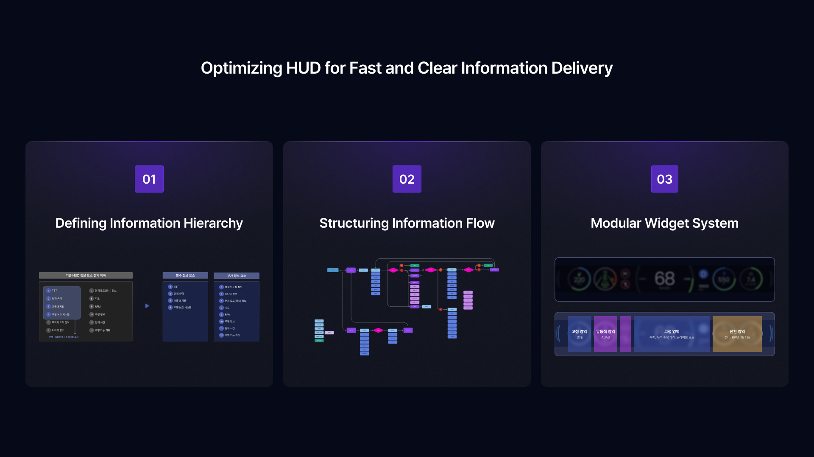
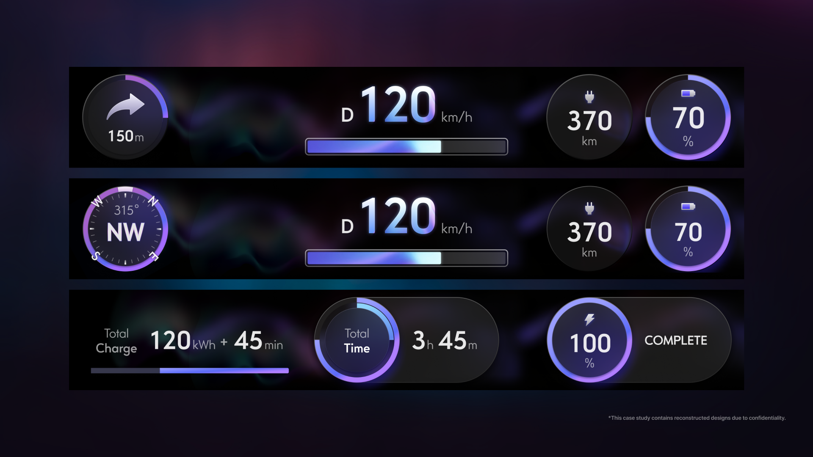

Overview프로젝트 개요
Designed GUI concept directions for Hyundai Motor's next-generation Head-Up Display — a narrow windshield-reflective display requiring high visibility, minimal distraction, and modular layout design. 좁은 윈드실드 반사형 디스플레이라는 제약 속에서 현대자동차 차세대 HUD GUI 컨셉 3종을 설계했으며, 최종적으로 심플형 컨셉이 채택되었습니다.
Problem문제
Traditional HUD design conventions didn't apply — the display was unusually narrow, windshield-reflective, and required delivering all essential driving information within extreme spatial constraints. 기존 HUD 설계 방식이 통하지 않는 특수 매체였습니다. 세로 높이가 좁고 윈드실드에 반사되는 형태로, 밝은 배경·낮은 대비·작은 폰트 사용이 어려운 제약이 있었습니다.
Outcome성과
✓ Adopted
Simple (icon-based) concept selected as final design direction by Hyundai 심플형(아이콘 기반) 컨셉이 현대자동차 최종 디자인 방향으로 채택
3
Distinct concept directions with prototypes delivered for client evaluation 프로토타입 포함 컨셉 방향 3가지 클라이언트 제안
Process과정
- Researched 8 competitor HUD systems to define information hierarchy: fixed, transitional, and TBT zones 8개 브랜드 HUD 리서치로 고정·전환·TBT 정보 우선순위 정의
- Designed 3 concept directions: graphic-rich (cyberpunk), graph-focused (standard), icon-based (simple) 그래픽 풍부형(사이버펑크)·그래프 중심형(표준)·아이콘 기반형(심플) 3종 컨셉 제작
- Conducted physical visibility tests by printing mockups at actual display size 실물 크기로 인쇄하여 물리적 시인성 테스트 진행
- Proposed a 12-column grid + widget-based modular layout for future scalability 향후 확장성을 위한 12컬럼 그리드 + 위젯 기반 모듈형 레이아웃 제안


What I Learned회고
Designing for constrained media teaches you to prioritize ruthlessly — every pixel has to earn its place. 제약이 많은 매체에서 디자인할수록 우선순위를 명확히 하는 힘이 생깁니다.